정보통신기사(구) (2009-09-07 기출문제)
1과목: 디지털 전자회로
1. 다음 중 증폭기의 동작 주파수를 훨씬 높게 할 목적으로 사용되는 회로는?
- 다링톤(Darlington) 회로
- 부우스크랩핑(bootstrapping) 회로
- 캐스코드(cascode) 회로
- 복동조 회로
(정답률: 56%)

2. 그림과 같은 스위칭 트리거 회로에서 SW를 OFF 시킬 때 C에 충전시 시정수는 몇 [ms]인가? (단, R1=100[Ω], R2=10[kΩ], C=3.3[μF], IC의 입력 임피던스는 무한대라 가정한다.)
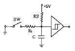
- 0.33
- 3.3
- 33
- 330
(정답률: 40%)
3. 다음 중 카르노드를 간략화한 논리식은?
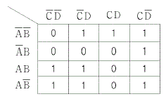
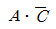
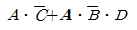
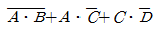
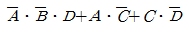
(정답률: 59%)
4. 다음 중 바이어스 전압에 따라 공간 전하용량이 달라지는 다이오드는?
- Zener Diode
- LCD
- Tunnel Diode
- Varactor Diode
(정답률: 54%)
5. MOD-32 2진카운터의 모든 상태를 완전히 디코드 하기 위해 필요한 AND 게이트의 수는?
- 32개
- 16개
- 10개
- 4개
(정답률: 44%)
6. 다음 중 플립플롭 회로를 활용할 수 없는 것은?
- 주파수분할기
- 주파수체배기
- 2진계수기
- 기억소자
(정답률: 50%)
7. 진폭변조에서 반송파의 주파수를 fc 변조신호의 주파수를 fs라고 할 때, AM파의 대역폭은?
- fc+fs
- fc-fs
- fs
- 2fs
(정답률: 58%)
8. 그림과 같이 연산증폭기를 사용한 윈(Wien) 브리지에서 발진회로의 발진주파수 f[Hz]는?
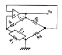
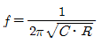
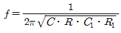
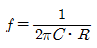
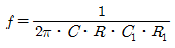
(정답률: 57%)
9. 다음 중 NOR 게이트로 구성된 R-S 플립플롭에 대한 설명으로 틀린 것은?(오류 신고가 접수된 문제입니다. 반드시 정답과 해설을 확인하시기 바랍니다.)
- S=R=0 이면 상태 변화가 없고 처음의 상태를 유지한다.
- S=0, R=1일 때, Qn=0 이면 Qn+1은 변화가 없고 Qn=1이면 Qn+1=0으로 된다.
- S=1, R=1일 때, Qn=0 이면 Qn+1=1로 되고 Qn=1 이면 Qn+1은 변화가 없다.
- 불능 상태 이다.
(정답률: 49%)
10. FM 주파수변조에서 단일 정현파인 변조파의 주파수가 fm, 변조지수가 m인 경우 피변조파의 주파수 대역폭 B는?
- B=(mf)fm
- B=(mf+1)fm
- B=2(mf+1)fm
- B=2fm
(정답률: 39%)
11. 그림에서 이득이 A인 연산증폭기에서 출력전압 Vo는?
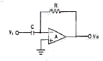
- Vo=-RCVi
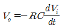
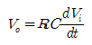
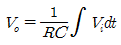
(정답률: 54%)
12. 그림의 555 타이머 회로의 출력에 나타나는 구형파의 발진주파수는 약 얼마인가? (단, R1=R2=3.6[kΩ], C1=0.02[μF], C2=0.01[μF])
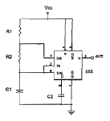
- 510[Hz]
- 6614[Hz]
- 9815[Hz]
- 16800[Hz]
(정답률: 35%)
13. 차동증폭기의 동상제거비(Common Mode Rejection Ratio)를 향상시키기 위한 방법으로 가장 적합하지 않은 것은?
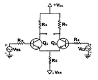
- hfe가 큰 트랜지스터를 선정한다.
- Emitter 저항 RE의 값을 높은 값으로 선정한다.
- 동상이득을 크게, 차동이득을 적게 한다.
- Q1, Q2는 전기적 특성이 동일한 트랜지스터를 선정한다.
(정답률: 47%)
14. 다음 중 C급 전력 증폭회로의 특징에 해당하는 것은?
- 신호의 일그러짐이 매우 크다.
- 수신기 및 저주파 증폭기에 주로 쓰인다.
- 푸시풀 증폭기에 해당된다.
- 신호의 전주기 동안에 컬렉터 바이어스 전류가 흐신른다.
(정답률: 24%)
15. 전압증폭기의 전압이득이 1000±100일 때 이 전압이득의 변화를 0.1[%]로 하기 위한 부궤한 증촉기의 궤환율 β는 얼마인가?
- 9.9
- 0.99
- 0.099
- 0.0099
(정답률: 61%)
16. 비동기식 모드(mode)-13 계수기를 만들려면 최소한 몇 개의 플립플롭이 필요한다?
- 13
- 7
- 4
- 2
(정답률: 47%)
17. 그림과 같은 증폭 회로에서 입력 임피던스 Rin은 약 몇 [kΩ]인가? (단, Re=2[kΩ], R2=1[kΩ], hre=1[kΩ], hfe=50)
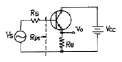
- 100
- 150
- 200
- 250
(정답률: 36%)
18. 다음과 같은 정 논리회로의 게이트 기능은?
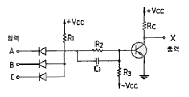
- NOR
- NOT
- NAND
- AND
(정답률: 54%)
19. 그림과 같은 MOS 게이트의 기능을 나타내는 논리식은? (단, 부논리인 경우이다.)
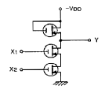
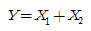
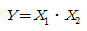
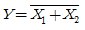
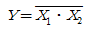
(정답률: 32%)
20. 다음 중 T플립플롭의 설명으로 틀린 것은?
- 지연작용을 갖는 지연 플립플롭이라고도 한다.
- J와 K를 묶어서 T입력신호로 한 것이다.
- 토글(toggle) 플립플롭이라고도 한다.
- 입력 T가 0일 경우에는 상태가 불변이다.
(정답률: 52%)
2과목: 정보통신 시스템
21. 다음 중 100Base-T 방식에서 사용하는 매체접근방법은?
- FDDI
- CSMA/CD
- MAP
- Token ring
(정답률: 54%)
22. 다음 중 센서 네트워크를 이용하여 유비쿼터스 환경을 구형하는 것을 목적으로 하는 것은?
- USN
- BCN
- TMN
- VAN
(정답률: 68%)
23. 다음 중 파장분할 다중전송시스템의 장점이 아닌 것은?
- 양방향 전송이 가능하다.
- 서로 다음 신호의 동시전송이 가능하다.
- 회로구성이 비교적 간단하다.
- 정보전송의 대용량화가 가능하다.
(정답률: 85%)
24. 패킷교환방식에서 트래픽제어 기법의 요소가 아닌 것은?
- flow control
- congestion control
- deadlock avoidance
- error control
(정답률: 61%)
25. 다음 중 ISDN에 의해 제공되는 서비스의 종류가 아닌 것은?
- 베어러 서비스(bearer service)
- 텔레 서비스(tele-service)
- 부가 서비스(supplementary service)
- 텔레텍스트 서비스(Teletext service)
(정답률: 53%)
26. 다음 중 통신 프로토콜의 기본 구성 요소는?
- 주소지정, 연결해제, 계층구조
- 데이터 형식, 코딩, 신호 레벨
- 제어정보, 에러정보, 분항정보
- 구문, 의미, 타이밍
(정답률: 83%)
27. HDLC 전송 제어 절차에서 프레임의 시작과 종료를 표시하는 것은?
- FCS
- 주소부
- 플래그
- 제어부
(정답률: 74%)
28. 다음 중 LAN의 분류방법에 해당되지 않는 것은?
- 토폴로지에 의한 분류
- 전송매체에 의한 분류
- 매체접금 방법에 의한 분류
- OSI 참조모델에 의한 분류
(정답률: 66%)
29. 패킷교환망(packet-switched network)에 대한 설명으로 틀린 것은?
- 패킷교환망을 통과한 패킷들의 순서는 전송한 순서와 다를 수도 있다.
- 데이터그램 서비스에서는 패킷에 목적지의 주소가 포함되며 이들 패킷들은 독립적으로 다루어진다.
- 호(call)가 한번 성립되면 호가 지속되는 동안 두 터미널간에 전용회선이 계속 유지된다.
- 장애발생시 대체 경로 선택기능이 있다.
(정답률: 72%)
30. 다음 중 TCP/IP 응용 서비스에 해당되지 않는 것은?
- ARP
- AMTP
- FTP
- Telnet
(정답률: 56%)
31. 다음 중 ISO의 OSI및 IBM의 SNA 등을 무엇이라 하는가?
- 프로토콜 프로그램
- 네트워크 아키택처
- 네트워크 인터페이스
- 네트워크 관리
(정답률: 77%)
32. 전송 오류를 검출하여 정정하는데 사용하는 ARQ방식 중 오류가 발생한 블록만을 재전송하는 바식은?
- Selective Repeat ARQ
- Go back N ARQ
- Stop and wait ARQ
- Adaptive ARQ
(정답률: 73%)
33. 일반적인 셀룰러 이동통신 시스템의 구성요소 가운데 다른 지역에서 이동해 온 이동국의 가입자 정보를 일시적으로 저장하는 데이터베이스는?
- MTSO
- VLR
- BS
- HLR
(정답률: 41%)
34. 다음 중 패킷교환망에서 DTE와 DCE간의 인터페이스를 위한 프로토콜은?
- TCP/IP
- FTAM
- V.21
- X.25
(정답률: 80%)
35. 다음 중 일반 공중전화망에 적합한 대표적인 교환방식은?
- 패킷교환방식
- 회선교환방식
- 메시지교환방식
- 데이터그램교환방식
(정답률: 88%)
36. 인터네트워킹에서 상호 연결된 네트워크의 집합을 무엇이라고 하는가?
- 게이트웨이(gateway)
- 캐티네트(catenet)
- 브라우터(Brouter)
- 패킷망(Packet Network)
(정답률: 38%)
37. OSI-7 참조모델의 계층에서 데이터의 압축, 암호화 등을 주로 수행하는 계층은?
- 세션 계층
- 응용 계층
- 네트워크 계층
- 프리젠테이션 계층
(정답률: 63%)
38. 다음 중 전보통신시스템의 회선 구성방식에서 전송되는 정보량이 많은 경우에 가장 적합한 방식은?
- 회선다중방식
- 집선방식
- 포인트 투 포인트방식
- 멀티포인트방식
(정답률: 60%)
39. MODEM의 수신 입력단에서 최저 S/N비가 25[dB] 필요하도록 설계되어 있다고 한다. 전송로의 수신레벨이 -10[dB]라고 할 때, 이 전송로의 허용되는 잡음 레벨은 몇 [dB]인가?
- -45
- -35
- -25
- -15
(정답률: 78%)
40. 셀룰러 이동 전화 시스템에서 PSTN과 이동 통신망간의 인터페이스 역할을 담당하는 것은?
- 패널 제어기
- SMSC
- MUX
- MTSO
(정답률: 63%)
3과목: 정보통신 기기
41. 다음 중 실제로 보낼 데이터가 있는 터미널에만 동적인 방식으로 각 부채널에 시간폭을 할당하는 것은?
- 지능 대중화기
- 광대역 다중화기
- 주파수분할 다중화기
- 역 다중화기
(정답률: 86%)
42. 다음 중 MODEM에 대한 설명으로 거리가 먼 것은?
- MODEM은 아날로그 전송매체를 통해 디지털 데이터를 전송하는데 필요한 기기이다.
- MODEM은 크게 송신부와 수신부로 구분된다.
- 변조방식으로는 ASK 방식이 가장 많이 쓰인다.
- 자동이득조절기(AGC)는 수신부에 속한다.
(정답률: 52%)
43. 다음 중 수퍼헤테로다인 수신기의 일반적인 특징이 아닌 것은?
- 수신기의 이득을 크게 할 수 있다.
- 선택도가 매우 낮다.
- 고 충실도를 얻을 수 있다.
- 영상혼싱을 받을 수 있다.
(정답률: 69%)
44. ITU-T의 메시지통신시스템(MHS) 관련 표준안은 어디레 권고 되어 있는가?
- I시리즈
- T시리즈
- V시리즈
- X시리즈
(정답률: 54%)
45. 위성통신을 행하기 위해서 제안된 통신위성방식이 아닌 것은?
- 이동 위성방식
- 정지 위성방식
- 위상 위성방식
- Random 위성방식
(정답률: 46%)
46. 다음 중 대역확산 통신방식에 의해 칠요로 하는 대역보다 넓은 대역으로 신호를 전송하는 방식은?
- CDMA
- FDMA
- SDMA
- TDMA
(정답률: 75%)
47. 다음 중 그림이나 사진을 직접 컴퓨터에 입력하는 것은?
- 스캐너
- 마우스
- 디지타이저
- 플로터
(정답률: 72%)
48. 다음 중 디지털 데이터의 형태로 전송할 때 필요한 DCE는?
- 자동응답기
- 호출기
- DSU
- MODEM
(정답률: 80%)
49. EIA의 RS-232C 25핀 접속규격 중 핀 번호의 정의가 틀린 것은?
- 핀 2번 : 데이터 송신(TD)
- 핀 4번 : 송신요구(RTS)
- 핀 6번 : 데이터 세트 준비완료(DSR)
- 핀 8번 : 데이터 단말준비 완료(DTR)
(정답률: 71%)
50. 팩시밀리 장치에서 주사기능과 광전변화 기능을 가지며, 고속주사가 가능한 장치는?
- 포트 다이오드
- LED
- CCD
- 광 트랜지스터
(정답률: 43%)
51. ATM 교환시스템의 주요 특징에 대한 설명으로 틀린 것은?
- 서비스특성 및 대역폭에 상관없이 수용이 가능함으로 새로운 서비스 수용이 가능하다.
- 기존의 다양한 종류의 망을 하나의 멀티미디어 통합형으로 구성할 수 있으므로 효율적인 망 운영이 가능하다.
- 사용하는 정보의 형태나 양에 따라 요금체계를 다양화할 수 있다.
- 동기식 다중방식을 사용함으로써 기존방식보다 전송효율을 높일 수 있다.
(정답률: 45%)
52. NTSC TV 방식에서 화면을 2회로 나누어 주사하여 화상의 깜박거림(flicker)을 적게 하는 주사방식은?
- 수평주사
- 수직주사
- 비월주사
- 순차주사
(정답률: 61%)
53. 이동통신 시스템의 주요 기능에 해당되지 않는 것은?
- 위치 등록(Location Registration)
- 자동적 최적의 존(Cell) 구역화
- 통화채널 전환(Hand off)
- 소구역 기법(Small Cell Technique)
(정답률: 52%)
54. 다음 중 변복조기의 고려사항이 아닌 것은?
- 변조방식
- 동기방식
- 등화방식
- 다중화방식
(정답률: 60%)
55. 다음 중 CATV에 대한 설명으로 옳지 않은 것은?
- CATV의 기본구성은 헤드엔드, 중계전송망 및 가입자 설비로 구분된다.
- 쌍방향 CATV는 가입자측에서 센터로 정보전송을 할 수 있도록 전송로를 구성하고 서비스를 고도화 한 것이다.
- CATV의 중계전송망은 분기증폭기, 다중화기, 가입자측 모뎀 및 분배기 등으로 구성된다.
- 쌍방향 CATV는 가입자장비에 프로세서와 RAM이 추가되어 정보통신 서비스가 가능하다.
(정답률: 56%)
56. 근거리 내에서 컴퓨터가 주변기기, 소프트웨어 또는 데이터와 같은 지원을 공유할 수 있는 것은?
- ISDN
- PABX
- LAN
- VAN
(정답률: 78%)
57. 텔리텍스트의 전송방식 중 지정하는 부호를 가지고 화면에 문자와 도형만을 나타내는 방식은?
- 부호방식
- 패턴 방식
- 그래픽 방식
- 혼합 방식
(정답률: 52%)
58. 다음 중 망구성 방식은 FTTC 구조를 가지고 있으며 아파트 등 수요밀집 지역을 광케이블화 하는데 필요한 광전송 시스템은?
- FLC-A
- FLC-B
- FLC-C
- FLC-D
(정답률: 58%)
59. 다음 중 정보통신시스템에서 사용되는 음성출력장치의 음성 출력방식에 해당되지 않는 것은?
- MMS 방식
- VCV 방식
- PCM 방식
- PARCOR 방식
(정답률: 42%)
60. 가입자가 요청하는 호를 접속하기 위하여 필요한 정보를 전화기와 교환기 또는 교환기 상호간에 주고받는 과정을 나타내는 방식은?
- 중계방식
- 교환방식
- 신호방식
- 서비스방식
(정답률: 41%)
4과목: 정보전송 공학
61. 병렬전송에서는 하나의 문자 전송 후 계속해서 다음 문자를 전송하면 문자와 문자 사이의 간격을 구분할 수 없기 때문에 이를 해결하기 위해 어떤 신호를 사용하여 데이터를 송수신 하는가?
- start 와 stop
- strobe 와 busy
- sinc 와 flag
- envelope 와 bearer
(정답률: 38%)
62. PCM에서 ISI를 측정하기 위해 eye patterv을 이용하는데 눈을 뜬 상하의 높이는 무엇을 의미하는가?
- 변조도
- 시스템 감도
- 잡음의 여유도
- ISI 간섭없이 수신파를 sampling 할 수 있는 주기
(정답률: 65%)
63. 다음 중 상호변조왜곡 장비 대책으로 가장 적합한 것은?
- 입력 신호의 레벨을 높인다.
- 전송시스템에 FDM 방식을 사용한다.
- 송수신 장치를 선형영역에서 동작시킨다.
- 필터를 이용하여 통과대역 내의 신호를 걸러낸다.
(정답률: 49%)
64. 다음 중 재전송이 일반적으로 필요하지 않는 방식은?
- FEC
- Go-back N ARQ
- Adaptive ARQ
- Selective Repeat ARQ
(정답률: 70%)
65. ISO 국제표준 프로토콜인 HDLC에 대한 설명으로 틀린 것은?
- 문자방식의 프로토콜이다.
- 오류제어를 위해 Go-back-N ARQ 방식을 사용할 수 있다.
- 사용하는 문자코드와 상관이 없으며 비트삽입(비트스터핑)에 의해 투명한 제이터의 전송을 보장한다.
- 반이중 및 전이중 통신을 지원한다.
(정답률: 58%)
66. 다음 중 Shannon의 채널용량을 나타내는 식으로 가장 적합한 것은? (단, C : 채널 용량, B : 채널의 대역폭이다.)
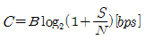
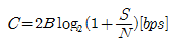
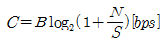
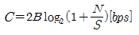
(정답률: 69%)
67. 다음 중 정합필터의 구성 소자로 가장 적합한 것은?
- 하나의 곱셈기와 하나의 미적분기
- 하나의 곱셈기와 하나의 적분기
- 하나의 가산기와 하나의 미분기
- 하나의 가산기와 하나의 적분기
(정답률: 61%)
68. 다음 중 동기식 전송의 특징으로 적합하지 않은 것은?
- 각 문자의 앞에는 시작비트, 뒤에는 종료(stop) 비트를 갖는다.
- 블록과 블록 사이에는 휴지간격이 없다.
- 정보전송 형태는 블록단위호 이루어진다.
- 수신측 단말에는 버퍼 기억장치를 가지고 있어야 한다.
(정답률: 65%)
69. OQPSK 방식은 QPSK 방식에서의 180° 위상변화를 제거하기 위해 I-CH이나 Q-CH 어느 한 채널을 지연시키는데 이 값은 얼마인가? (단, symbol time은 Ts이다.)
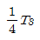
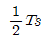
- Ts
- 2Ts
(정답률: 57%)
70. 다음 중 전송부호가 가져야 할 조건으로 적합하지 않은 것은?
- 전송대역폭이 압축되어야 한다.
- 동기정보가 충분히 포함되어야 한다.
- 전송부호의 코딩효율이 양호해야 한다.
- 직류 성분이 포함되어야 한다.
(정답률: 78%)
71. 전파가 다중 반사되어 수심점에 도달하게 되므로 이들 전파의 도달시간의 차이로 인해 수신점에서 심벌(symbol)이 겹치는 현상이 일어나는데 이를 무엇이라고 하는가?
- 동일채널간섭
- 지역확산
- 도플러 효과
- 대척점 효과
(정답률: 49%)
72. 다음 중 베이스 밴드 전송 방식에 관한 설명으로 가장 적합한 것은?
- 아날로그 신호 전송에 주로 사용한다.
- 디지털신호의 펄스열을 그대로 전송하는 방식이다.
- 디지털신호를 반송파에 비례하여 전송하는 방식이다.
- 일정한 주파수 대역을 통과하는 신호만을 전송하는 방식이다.
(정답률: 60%)
73. 64진 QAM의 대역폭 효율은 몇 [bps/Hz]인가?
- 2[bps/Hz]
- 5[bps/Hz]
- 6[bps/Hz]
- 7[bps/Hz]
(정답률: 80%)
74. 해밍부호를 이용한 오류정정 방식에서 정보 데이터가 7비트로 구성된 경우에 오류를 정정하기 위하여 몇 비트의 해밍부호가 필요한가?
- 1비트
- 3비트
- 4비트
- 8비트
(정답률: 33%)
75. 검출 후 재전송(ARQ) 방식 중에서 가장 복잡한 방식은?
- 정지 조회ARQ
- 반송 N-블럭 ARQ
- 적응적 ARQ
- 선별 재전송 ARQ
(정답률: 45%)
76. 해밍 거리가 8일 때 수신 단에서 정정 가능한 최대 오류개수는?
- 2
- 3
- 4
- 5
(정답률: 77%)
77. 다음 중 동축케이블에 대한 설명으로 적합하지 않은 것은?
- 불평형 선로이다.
- 누화측성은 주파수가 낮을수록 개선된다.
- 아날로그 신호 전송과 디지털 신호 전송 모두에 이용할 수 있다.
- 비유전율이 1인 경우 동축케이블 내에서의 전파속도는 광속과 같다.
(정답률: 53%)
78. OSI 7 계층에서 상위 계층에서 하위계층으로 데이터를 전달할 때 필요한 제어정보(header/trailer)를 덧붙이는 과정은?
- Packet
- Assembly
- Reassembly
- Encapsulation
(정답률: 74%)
79. 다음 중 엘리어싱 오차(Aliasing error)를 줄이기 위한 방법으로 가장 타당한 것은?
- 샘플링 주기를 높인다.
- 샘플링 주기를 낮춘다.
- 신호성분 중 필요한 대역이상의 고주파 성분을 제거한다.
- 신호성분 중 필요한 대역이상의 저주파 성분을 제거한다.
(정답률: 41%)
80. 데이터 통신망의 데드락(deadlock) 회피를 위해 필요한 제어는?
- 흐름제어
- 경로제어
- 오류제어
- 순서제어
(정답률: 75%)
5과목: 전자계산기일반 및 정보통신설비기준
81. Formatting한 1.2MB의 디스켓에 최대 몇 개의 영문자를 저장 할 수 있는가? (단, 1.2MB 모두 영문자 저장에 사용)
- 약 655000
- 약 965000
- 약 1024000
- 약 1258000
(정답률: 42%)
82. 여러 명의 사용자가 사용하는 시스템에서 컴퓨터가 사용자들의 프로그램을 번갈아가면서 처리해 줌으로서 각 사용자가 각자 독립된 컴퓨터를 사용하는 느낌을 주는 시스템과 가장 관계 깊은 것은?
- on-line system
- batch file system
- dual system
- time sharing system
(정답률: 73%)
83. 캐시 메모리의 기록 정책 가운데 쓰기(write) 동작이 이루어질 때마다 캐시 메모리와 주기억장치의 내용을 동시에 갱신하는 방식은?
- write-through
- write-back
- direct 매핑
- write-all
(정답률: 56%)
84. 다음 기억장치의 설명 중 틀린 것은?
- 주기억장치에서 SRAM 이나 DRAM은 소멸설 기억장치이다.
- 주기억장치에서 32×32(bit) 형태의 DRAM이라면 재생계수기는 5bit 계수기를 사용할 수 있다.
- 보조기억장치 중 자기테이프는 임의접근이 불가능하다.
- 보조기억장치에서는 바이트와 같은 세분화된 정보의 단위로 주소를 지정할 수 있다.
(정답률: 40%)
85. 고급 언어(high-level language)에 대한 특징으로 가장 옳은 것은?
- computer 하드웨어와 compiler에 종속적이다.
- computer 하드웨어에 종속적이고, compiler에 독립적이다.
- computer 하드웨어와 compiler에 독립적이다.
- computer 하드웨어에 독립적이고, compiler에 종속적이다.
(정답률: 64%)
86. 교착상태의 해결 방법 중 회피(Avoidance) 기법과 밀접한 관계가 있는 것은?
- 은행원 알고리즘 사용
- 점유 및 대기 방지
- 비선점 방지
- 환형 대기 방지
(정답률: 59%)
87. 다음 중 종류가 다른 연산은?
- AND
- ADD
- OR
- NOT
(정답률: 74%)
88. 마이크로프로그램에 의한 각 기계어 명령들은 제어 메모리에 있는 일련의 마이크로 오퍼레이션의 동작을 시작하는데 다음 중 이에 맞지 않는 동작은?
- 주기억 장치에서 명령어 인출하는 동작
- 오퍼랜드의 유효 주소를 계산하는 동작
- 지정된 연산을 수행하는 동작
- 다음 단계의 주소를 결정하는 동작
(정답률: 44%)
89. 다음 중 프로그램 카운터의 내용과 명령의 번지 부분을 더해서 유효 번지가 결정되는 주소 지정 방식은?
- 상대 번지 모드
- 직접 번지 모드
- 인덱스 번지 모드
- 베이스 레지스터 번지 모드
(정답률: 54%)
90. 특정한 비트 또는 특정의 문자를 삭제하기 위해서 필요한 연산은?
- AND 연산
- OR 연산
- NOT 연산
- COMPLEMENT 연산
(정답률: 50%)
91. 전기통신설비가 다른 사람의 전기통신설비와 접속되는 경우에 그 건설과 보전에 관한 책임의 한계를 명확히 하기 위하여 설정 되어야 하는 것은?
- 단자함
- 절분점
- 분계점
- 접속점
(정답률: 65%)
92. 다음 중 정보통신공사업 등록기준이 아닌 것은?
- 사무실
- 자본금
- 기술능력
- 전년도 공사실적
(정답률: 55%)
93. 전화급 평형회선은 회선상호간 전기통신신호의 내용이 홍입되지 아니하도록 두 회선사이의 근단누화 또는 원단누화의 감쇠량은?
- 48데시벨 이상
- 58데시벨 이상
- 68데시벨 이상
- 78데시벨 이상
(정답률: 55%)
94. 수급인으로부터 공사를 하도급받은 공사업자를 무엇이라 하는가?
- 도급인
- 하도급인
- 용역업자
- 하수급인
(정답률: 20%)
95. 다음 ( )안에 들어갈 내용으로 가장 적합한 것은?
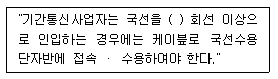
- 3
- 5
- 10
- 20
(정답률: 48%)
96. 공사업자가 설계도서 및 관련규정의 내용과 적합하지 아니하게 당해 공사를 시공하는 경우에 감리원이 조치를 할 수 있는 것으로 가장 적합한 것은?
- 발주자와 협의하여 설계변경 명령을 할 수 있다.
- 발주자와 동의를 얻어 공사중지 명령을 할 수 있다.
- 발주자에게 보고하고 공사업자의 교체를 요구할 수 있다.
- 한국정보통신공사협회에 신고하고 공사업자를 고발 조치할 수 있다.
(정답률: 39%)
97. 다음 ( )안에 들어갈 내용으로 가장 적합한 것은?
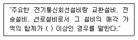
- 10억원
- 30억원
- 50억원
- 100억원
(정답률: 47%)
98. 다음 전기통신 기본법의 제정 목적에 속하지 않는 것은?
- 전기통신을 효율적으로 관리함
- 공공복리의 증진에 이바지 함
- 전기통신에 관한 기본적인 사항을 정함
- 정보통신망의 개발 보급과 이용을 촉진함
(정답률: 38%)
99. 기간통신사업자로부터 전기통신회선설비를 임차하여 기간통신 역무 외의 전기통신역무를 제공하는 사업은?
- 별정통신사업
- 기간통신사업
- 부가통신사업
- 공중통신사업
(정답률: 41%)
100. 모든 이용자가 언제 어디서나 적정한 요금으로 제공 받을 수 있는 기본적인 전기통신역무를 말하는 것은?
- 보편적 역무
- 정보통신 역무
- 전기통신 역무
- 특수통신 역무
(정답률: 66%)